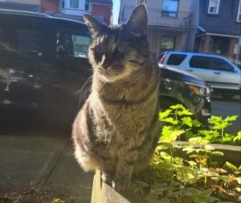

Lucy Xiang
About Me
I grew up in the suburbs of Eastern Ontario and I now live and work in Toronto. Graduate from the University of Toronto with research and writing skills in both the Arts and Sciences,
particularly in environmental subjects. Experience working in a non-profit organization conducting administrative tasks,
detail-oriented research, mapping funding and network opportunities, and delivering program assistance. Passionate about nature,
environmental justice and community building. Currently in Fleming College's Geographic Information Systems (GIS) Application Specialist
Post Graduate Program. I live with a cat named Nietzsche.

Education
Fleming College 2023-2024
Ontario Graduate Certificate, Geographic Information Systems (GIS) Applications Specialist
Post graduate program involving hands on applications using GIS technology tools. Courses include Program Solving and Programming, Spatial
Analysis, Geovisualization, Surveying and CAD Mapping, Web Design and Programming, Remote Sensing and Image Analysis, and GIS Database
Principles. Gaining experience using software such as VS Code, ArcGIS Pro, ArcGIS Online, CATALYST Pro. Learning computer languages such as
Python, HTML and CSS, SQL, and Javascript.
- Learning to explore, identify and analyze spatial problems, develop solutions and validate results.
- Create maps and visual displays based on recognized design principles that communicate geographic information effectively.
- Work effectively in a collaborative work environment, demonstrating effective teamwork, interpersonal and communication skills.
- Apply database systems to enable the efficient query and analysis of spatial and non-spatial data.
- Apply qualitative and quantitative methods in the analysis of spatial phenomena within a Geographic Information System.
- Plan and manage projects, and develop workflows to accomplish specific objectives and tasks.
University of Toronto, St. George 2015-2020
Honours Bachelors of Science, Double Major in Biodiversity and Conservation Biology and Environmental Studies, Minor in Women
and Gender Studies
Foundations in ecology, evolutionary biology, biodiversity and conservation biology, environmental biology, mathematics, and statistics.
In-depth knowledge about the diversity of living organisms and take advanced courses in ecology, evolution, and biodiversity and conservation biology.
Rigorous academic study of the economic, social, cultural and political forces that drive issues such as species extinction, loss of biodiversity, air
and water pollution, and climate change. Interdisciplinary studies providing grounding in scientific literacy while advancing critical thinking skills
to evaluate complex environmental problems and sustainable solutions for improved environmental health and well-being.
Work Experience
Transcriptionist and Speech Recognition QA 2021 - present
- Providing manual annotations of audio files and corrections of automatically produced transcripts while inspecting and tagging audio samples for quality assurance.
- Annotating different types of linguistic and paralinguistic events.
- Efficient communication and feedback to engineering team to continuously improve transcription platform and optimize transcription time.
Program Development Intern 2019
- Mapped institutional funding opportunities, built a database of like-minded organizations and research opportunities in Canada and abroad using MS Excel.
- Assisted with administrative tasks like database management and preparing thank you notes for donors.
- Supported program development by performing desk research on community-centred conservation, dynamics of gender and role of transformative local leadership in fragile states in Africa.
- Delivered a presentation of research findings to staff, “Gender in Community-centred Conservation”.
- Reported notes and participated in Uncovering Common Ground program workshops that connected Indigenous and non-Indigenous youth to discuss reconciliation and decolonization.